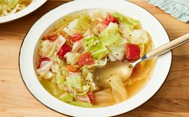

Supa od kupusa

Opis
Idealno za zimu.
Sastojci:
- 3 kašike maslinovog ulja
- Pola iseckanog luka
- 2 iseckana čena belog luka u čoperu
- 2 litra vode
- 4 kašičice pilećih buljongranula
- 1 kašičica soli ili po ukusu
- Pola kašičice crnog bibera ili po ukusu
- Pola glavice iseckanog kupusa
- 1 konzerva Italijanskog isceđenog i iseckanog paradajza
Uputstvo:
- Zagrejate maslinovo ulje u velikoj šerpi i prodinstati luk i beli luk dok luk ne omekša (oko 5 minuta).
- Prodinstati vodu, buljon, so i biber do ključanja i prodinstati kupus. Krčkati oko 10 minuta.
- Prodinstati paradajz dok ne proključa i krčkati 15 do 30 minuta sa povremenim mešanjem.
Početna strana